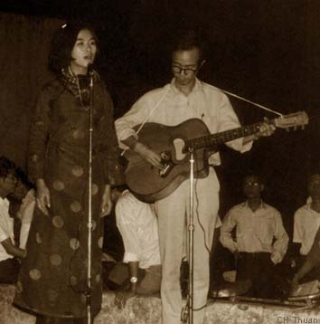

Trịnh Công Sơn - tôi gặp anh vào năm 1958; lúc đó Trịnh Công Sơn 19 tuổi và tôi 20 tuổi ở tại Huế. Chúng tôi chơi với nhau vì tâm hồn thi ca, và bởi vì lúc đó tôi chưa hề là họa sĩ. Sơn thích thơ của tôi và đã phổ bài Cuối cùng cho một tình yêu năm đó. Trước đó Trịnh Công Sơn đã viết ướt mi, Thương một người và Nhìn những mùa thu đi. Ngôn ngữ của ướt mi, Thương một người và Nhìn những mùa thu đi còn nhẹ nhàng, và còn có gì đó ảnh hưởng của những Đặng Thế Phong trong Giọt mưa thu hoặc là Buồn tàn thu của Văn Cao - nhưng mà khi đến bài thơ của tôi, Trịnh Công Sơn bắt đầu một chương khác, bởi vì lời lẽ của bài thơ đó - lúc đó rất là mới. Tôi đã dùng những chữ "đói” - những chữ “mỏi" vào trong thi ca, mà lúc đó sự ảnh hưởng của thi ca tiền chiến rất dữ dội, thì Sơn lại thích bài thơ đó. Và Diễm xưa sau đó đã đánh dấu một bước ngoặt trong ngôn ngữ nhạc Trịnh Công Sơn.
Tôi cho bài Diễm xưa là mở đầu của một Trịnh Công Sơn hoàn toàn mới lạ và cực kỳ hấp dẫn trong nền nhạc trẻ, hồi đó - mà anh Văn Cao lúc đó là một bậc đàn anh rất lớn. Cuộc đời của Sơn rất là bi kịch, bởi vì thiên tài âm nhạc này được hình thành một cách lạ lùng; bởi vì nếu không có một biến cố gia đình - ba của Sơn mất trong lúc Sơn đang học ở Chasseloup Laubat - một trường dạy chương trình Pháp - và Sơn đang chuẩn bị thi thì phải bỏ học để về chịu tang ba. Rồi sau đó trong một thời gian tập võ - Sơn rất giỏi thể thao, Sơn chạy, tập 10 môn phối hợp rất được chú ý ở trung học. Sơn giỏi về Nhu đạo và Boxing. Trong một buổi dợt với người em là Trịnh Quang Hà. Sơn đã bị một cú choàng vai, và bị tổn thương phổi rất nặng, cho nên Sơn phải bỏ cuộc, và nằm bệnh hai năm. Nếu mà Sơn không bị những sự kiện đó, tôi nghĩ là Sơn sẽ đi học ở Paris và sẽ trở thành một doctor, một kỹ sư... chớ không phải là một nhạc sĩ Trịnh Công Sơn. Vậy thì, trong tình bạn và trong sự nghiên cứu của tôi, tôi cho sự kiện biến cố đó đã đặt Trịnh Công Sơn vào trong sự thay đổi con-xen-tuya của mình trong cô đơn, tuyệt vọng. Và trong sự mất mát lớn lao đó, nỗi đau khổ đã trở thành nhân tố của một con người văn nghệ - và Sơn tự tập đàn guitare, tự học guiture với một người bạn, rồi sau đó sáng tác và viết ca khúc ướt mi, nhìn những mùa thu đi.
Khi tôi gặp Sơn, thì Sơn đã bình phục và đã vui chơi trở lại. - Sơn không có diều kiện trở lại Sài Gòn để học tiếp ở Chasseloup Laubat vì gia đình Sơn bị bankruptcy (phá sản), không còn phương tiện để Sơn được học hành như một công tử - bởi vì Sơn lúc đó là con nhà giàu, rất công tử. Và đó cũng!à một lý do để Sơn đến với văn nghệ. Sau đó - để tránh cho Sơn đỡ phải đi quân dịch, cho nên một số bạn như Hoàng Phủ Ngọc Tường, Ngô Kha đã giúp Sơn thi đậu vào trường Sư phạm Quy Nhơn. Sơn học ở đó để ra làm trưởng giáo của một trường Thượng ở trên Lâm Đồng.
Thế thì bản Biển nhớ ra đời tại trường Sư phạm Quy Nhơn. Và nhân vật để Sơn viết bài Biển nhớ, đó là một người bạn gái có tên là Khê, nên có câu là “Trời cao níu bước Sơn Khê". Đó là tình sử của bài Biển nhớ. Sau đó thì Sơn lên B’Lao nhận chức trưởng giáo của một trường Thượng có hai lớp, cách nhà trọ khoảng năm bảy cây số. Sơn phải đạp xe vào làng Thượng để dạy những em bé người Thượng. Tôi lên thăm Sơn, và đưa Sơn ra Đà Lạt để chơi cuối tuần. Phòng trọ với bốn bức vách đầy chim và bao thuốc lá Basto - ở đó Sơn đã khởi sự một sự nghiệp âm nhạc của anh với những bài như Du mục, như Xin mặt trời ngủ yên, như Dấu chân địa đàng. Và mở đầu cũng là nơi để anh viết những ca khúc về thân phận, ca khúc thân phận và tình khúc luôn luôn song hành trong anh. Thời điểm đó chính là thời điểm tôi và Sơn gặp Khánh Ly tại một phòng trà ca nhạc nhỏ ở Đà Lạt. Người hát nhạc Trịnh Công Sơn đầu tiên và làm cho công chúng yêu nhạc Sài Gòn biết đến Sơn không phải là Khánh Ly mà là Thanh Thúy - Thanh Thúy đã đưa bài ướt mi vào trái tim của mọi người và sau đó Trịnh Công Sơn viết bài Thương một người để tặng cho Thanh Thúy "Thương ai về ngỏ tối, sương rơi ướt đôi vai...”. Thanh Thúy ở trong một cái hẻm ở trên đường Cao Thắng - Sơn về thấy Thanh Thúy đi về trong cái hẻm đó, cho nên "Thương ai về ngõ tối, sương rơi ướt đôi vai..."
Đó là Trịnh Công Sơn, hát nhạc Sơn mở đầu sự nghiệp nổi tiếng của Sơn chính là Thanh Thúy - nhưng người mà giữ lái con đò âm nhạc của Trịnh Công Sơn trên dòng sông của đất nước chính là Khánh Ly kể từ khi Diễm xưa ra đời. Cuộc gặp gỡ một cô ca sĩ bé nhỏ trông rất là nhếch nhác ở Đà Lạt lại là một định mệnh - Sơn đi tìm một ca sĩ trẻ hoàn toàn vô danh và Sơn bắt đầu từ giọng hát của người ấy và sự tập luyện cho cô ta bởi vì lúc đó, những ca sĩ nổi tiếng của Sài Gòn Sơn chưa hề biết tới, Sơn không quen, Sơn còn xa lạ, và Sơn nghĩ con đường của mình khiêm tốn hơn, và có lẽ dễ hơn là đi tìm một ca sĩ vô danh như Khánh Ly. Ánh sáng của định mệnh đã chỉ cho Sơn đến với Khánh Ly - và từ đó Khánh Ly đã tìm được nơi nương tựa và nơi phát triển tiếng hát của mình lên đỉnh cao.
Thế thì, khi Sơn làm nhạc, chúng tôi thấy hay quá, và chúng tôi khuyến khích Sơn về Sài Gòn, bỏ dạy học - một cái nghề không thích hợp và rất không xứng với Sơn. Tôi có căn phòng rất bé ở đường Trương Minh Giảng, là chỗ Sơn từ Đà Lạt về để ở lại với tôi nhiều năm trong cái căn phòng đó, ở gần chợ Trương Minh Giảng, và bên kia đường là nhà của Bùi Giáng - cũng trong một cái xóm nghèo. Nhà tôi là nơi tạm trú đầu tiên của Trịnh Công Sơn khi về Sài Gòn và Đinh Cường - họa sĩ Đinh Cường cũng là một trong những người bạn rất thân với Sơn - cũng thường ghé đến đó. Đôi khi ba chúng tôi ngủ chung trong một chiếc chiếu, và đã sống với nhau bằng đồng tiền dạy học của tôi.
Từ đó Sơn gặp anh em văn nghệ sĩ ở Sài Gòn, gặp anh Phạm Duy, gặp Nguyễn Đình Toàn, gặp Thanh Tâm Tuyền, gặp tất cả những con người văn nghệ Sài Gòn sau sự chọn lựa đó...và Sơn xuất hiện tại sân của trường Đại học Văn khoa ở đường Lê Thánh Tôn, nơi có trụ sở của Hội Họa sĩ trẻ và bên sau lưng đó là trụ sở của CPS nơi mà Đỗ Ngọc Yến, Trần Đại Ngọc, Hoàng Tường Cát đã hoạt động chương trình mùa hè ở đó.
Sơn đã đưa Khánh Ly xuất hiện ở sân cỏ, sân đất, và lẽ dĩ nhiên ở đó không thể dành cho những bộ trang phục lộng lẫy, những đôi giày cao gót và Khánh Ly đã đi chân trần và hát cho sinh viên nghe. Họ đã sớm trở thành thần tượng của tuổi trẻ Sài Gòn vì cái tính chất mới mẻ và như đại diện của tâm hồn trẻ thanh niên Sài Gòn lúc đó, và đã trở thành một movement, một hiện tượng âm nhạc ngay lúc đó.
Sau đó có sự hỗ trợ của một phong trào du ca, như anh Nguyễn Đức Quang, Nguyễn Nghĩa... đã ra đời cùng thời điểm đó. Tôi cho thời điểm đó là một thời điểm lịch sử - thật sự bùng nổ về văn nghệ của giới trẻ trong đó có chúng tôi - Hội họa sĩ trẻ.
Thời đại đó, sản sinh ra những hiện tượng như vậy và Trịnh Công Sơn đã là nhân vật nổi bật nhất trong giới trẻ thời đó cũng như Khánh Ly. Họ chóng đạt được những thành công rực rỡ và trở thành thần tượng của cả giới trẻ.
Trịnh Công Sơn nối tiếp cao trào đó đã dấn thân thêm nhiều bước trong lãnh vực âm nhạc của mình để gần gũi với xã hội, để gần gũi với thời cuộc hơn, để chia sẻ với đất nước hơn - những ca thúc da vàng ra đời, rồi đến Kinh Việt Nam (...).
Người ta gọi nhạc Trịnh Công Sơn ở một số ca khúc là nhạc “phản chiến". Tôi cho là chữ “thân phận" của người Việt thì khái quát hơn.
Một thanh niên Việt Nam ở bất kỳ thời đại nào, thì vẫn đầy sự hồn nhiên, và vẫn đầy lòng lương thiện để có một lý tưởng cho dân tộc, cho sự công bằng, cho sự không đổ máu, cho sự đoàn kết, cho sự thương yêu... và cái chất đó có hầu hết ở chúng ta, và có hầu hết ở các lứa tuổi đang bước vào Đại học... nhưng tuổi trẻ không bao giờ lường trước được những âm mưu - cho nên cái sự hồn nhiên đó phải trả giá.
Trịnh Công Sơn viết những bài Nối vòng tay lớn, Huế - Sài Gòn - Hà Nội 20 năm xa vẫn còn xa... Để làm gì? Để ước mơ đất nước hòa bình thống nhất, để ước mơ anh em bắt tay nhau khi mà người di cư đã viết về “Hà Nội ơi ta nhớ...", thì rõ ràng không ai lại không nhớ Hà Nội nếu bỏ quê hương ra đi, không ai không muốn gặp lại người thân... thì Trịnh Công Sơn đã đứng làm kẻ chịu vác cái thánh giá đó với bao nhiêu bi kịch sau đó (...).
Đến ngày 30 tháng Tư thì Sơn ở lại. Tôi nhớ buổi chiều đó, Đỗ Ngọc Yến đến đón Sơn với một nhà báo Mỹ, đề nghị Sơn đã có máy bay đưa gia đình Sơn đi Hoa Kỳ, nhưng Sơn không đồng ý. Tôi rất muốn đi Hoa Kỳ nhưng mà Đỗ Ngọc Yến lại không hỏi tôi.
Sau đó Sơn về Huế để tìm một nơi nương tựa bởi vì ở đó Sơn có nhiều anh em, Sơn hy vọng là họ sẽ giúp đỡ cho Sơn (...).
Ở Huế, Sơn đi thực tế, tức là đi để biết người nông dân cày bừa cực khổ như thế nào. Sơn đi trên những cánh đồng còn rải rác những chông mìn. Sơn đã thoát chết trong một lần, một con trâu đã cứu Sơn khi nó đạp quả mìn mà đáng lẽ Sơn sẽ đạp.
Bởi vì tài năng âm nhạc của Sơn quá lớn, cho nên trong số những người lãnh đạo, có người, biết cách thức để giữ Sơn lại bằng cách bao bọc cho Sơn khỏi những tình huống hiểm nghèo. Họ đã tìm cách đưa Sơn về Sài Gòn, trả lại hộ khẩu cho Sơn, tạo điều kiện để cho Sơn yên tâm sống ở Sài Gòn. Và Sơn đã nghe được những luận điệu chống mình ở tại hải ngoại, nên Sơn rất sợ mặc dù có nhiều lời mời ở các đại học, Sơn đều không dám đi. Sơn từ chối, vì Sơn sợ cộng đồng ở đây sẽ gây ra nhưng nguy hiểm cho Sơn. Nên không dám đi, cho đến ngày Sơn mất. Có người đã về đề nghị đưa Sơn sang đây để thay gan cho Sơn miễn phí nhưng Sơn cũng từ chối.
Trong thời gian 25 năm sau giải phóng, tôi tiếp tục chơi với Sơn, không làm gì được để giữ Sơn lại với cuộc đời này.
...Những ngày tháng cuối cùng của anh, tôi đã ở bên anh, tôi ngồi với anh dưới bóng cây để uống tách trà, để nhìn nhau cho đỡ nhớ, để nói với nhau một vài thông tin về bạn bè - rồi đi về. Sơn ngồi ở cái vườn trên gác nhà Sơn, có một cây hoa sứ già 28 năm, một giàn hoa giấy... nó đã trở thành một cánh rừng nhỏ của Sơn và tôi đã nhìn Sơn tàn phai theo nắng chiều qua những tia nắng hoặc cuối mùa, cuối ngày qua những chiếc lá của cánh rừng bông giấy. Và thỉnh thoảng có vài tiếng chim hót như chia sẻ cái nỗi cô đơn của Sơn. Buổi chiều, tôi và Sơn đi ra ngoài một cái nhà hàng mà các bạn chắc còn nhớ, đó là Givral để nhìn qua bên kia khách sạn Continental, để nhìn cuộc đời đi qua, để nhìn vài cánh én... rồi đi về.
Sơn thèm đi ra phố, Sơn thèm hơi của thành phố. Bởi vì chúng tôi là những con người đã gắn bó với Sài Gòn từ lúc trẻ đến nay. Vì vậy cho nên... "Chiều một mình qua phố...”, hay "Chiều chủ nhật buồn, nằm trong căn gác đìu hiu...". Đó là đời sống của chúng tôi xưa, và nó theo chúng tôi mãi mãi. Và Trịnh Công Sơn - hôm nay tôi được dịp để nói về anh, để nói về cái sự tuyệt vời chịu đựng một bi kịch kéo dài cho tới ngày mà căn bịnh quái ác đã đục khoét tinh thần sức khỏe của anh cho đến hơi thở cuối cùng.
Trích bài nói chuyện của họa sĩ Trịnh Cung, bạn của Trịnh Công Sơn tại Mỹ. (BT)